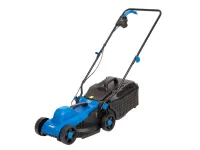
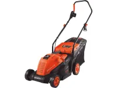
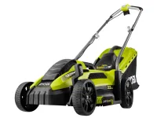

Hyundai HYD - 1300 elektromos fűnyíró 1300W 32 cm
A Hyundai HYD-1300 elektromos fűnyíró egy megbízható és praktikus eszköz, amely ideális választás kisebb és közepes méretű kertek karbantartásához. A 1300 W teljesítményű motor könnyedén megbirkózik a gyep különböző sűrűségével, miközben a 33 cm-es vágási szélesség gyors munkavégzést tesz lehetővé.

Daewoo elektromos fűnyíró DLMJ1700E 1700W 36 cm 50 l
Daewoo 1700 W-os 36 cm-es vágásszélességű elektromos fűnyíró. Teljesítmény 1700 W. Vágószélesség 36 cm. 3 Vágásmagasság 25/42/60mm. Fűgyűjtő űrtartalma 50L . Felhajtható tolófogantyú a könnyű tárolás érdekében.

Ryobi fűnyíró RLM13E33S 1300 W
Fedezze fel a Ryobi RLM13E33S 33 cm-es elektromos fűnyírót, amely ideális választás kis és közepes méretű pázsitokhoz. Az 1300 W-os motorral rendelkező fűnyíró erőteljes vágást biztosít, így gyorsan és hatékonyan végrehajthatja a fűnyírási feladatokat.